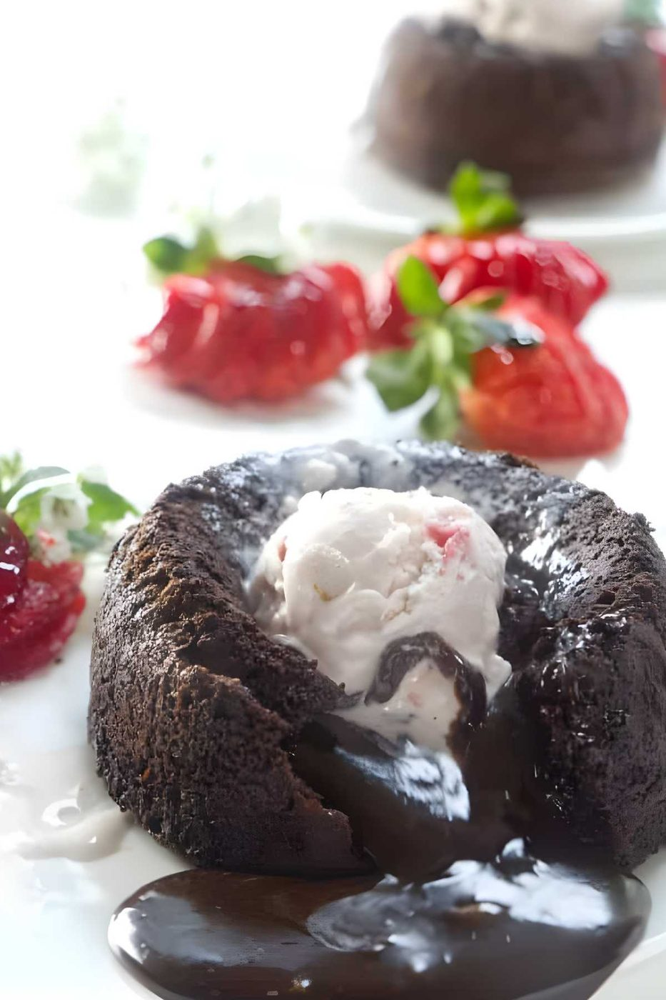
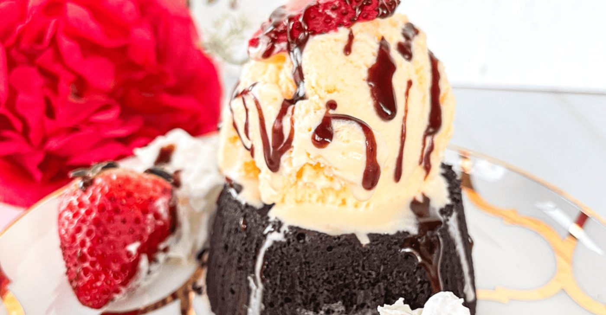
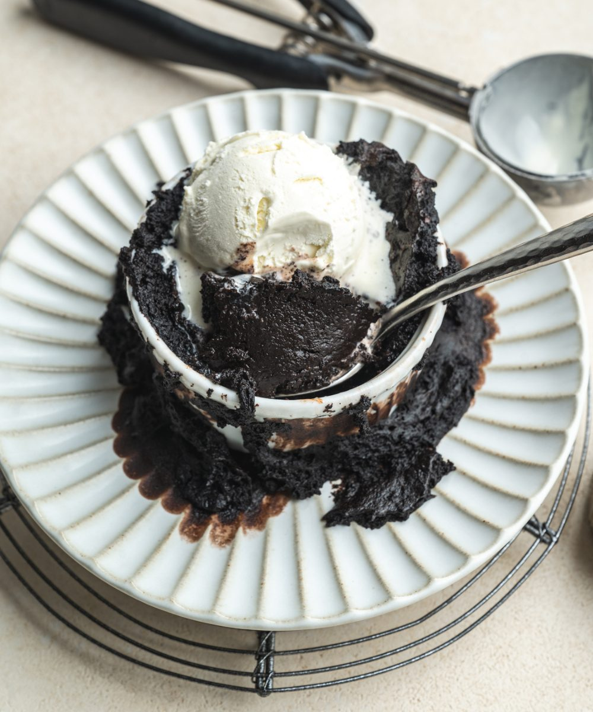
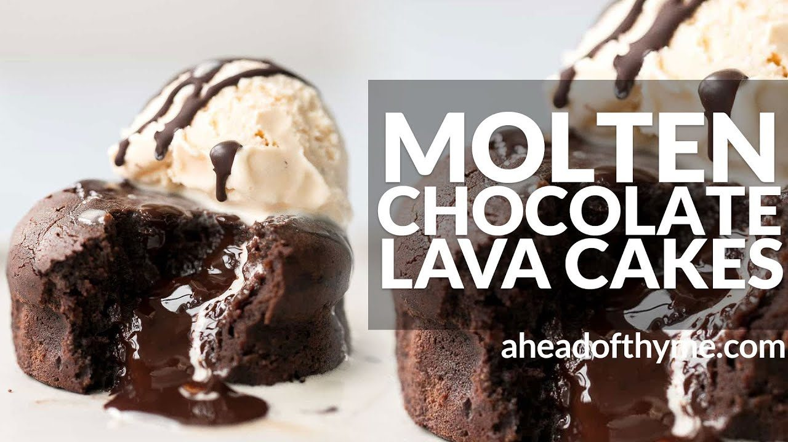
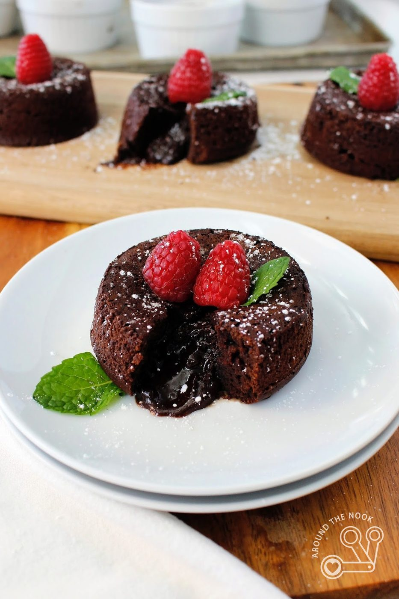
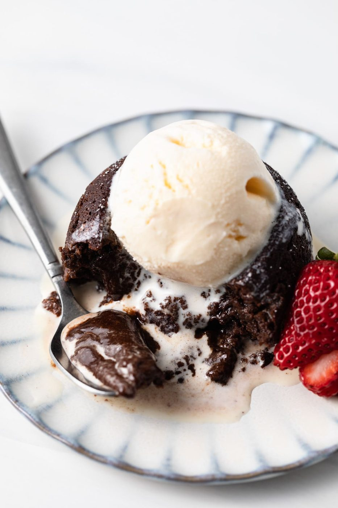
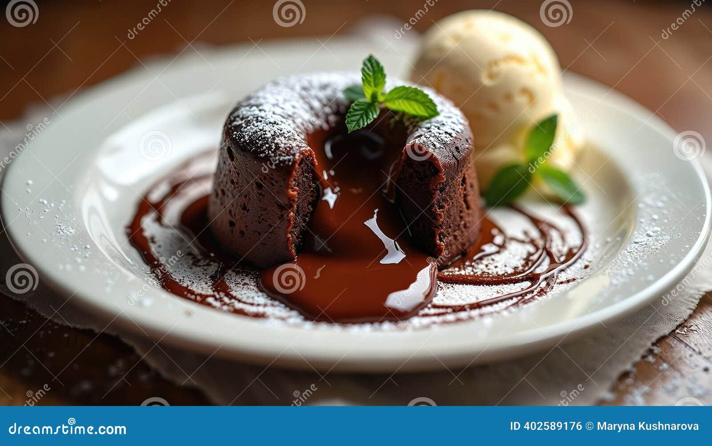

← Sweet & Baked
Chocolate Lava Cake
Twelve minutes of baking between undercooked and overcooked. Worth every second of the anxiety.
Twelve minutes of baking between undercooked and overcooked. Worth every second of the anxiety.
The lava cake was born — so the famous story goes — from a mistake: New York chef Jean-Georges Vongerichten pulled a chocolate sponge out of the oven too early in 1987, cut into it, and watched molten batter flow out. He put it on the menu. Half the world's restaurant desserts have been a variation on that 'error' ever since.
The recipe is a small-format butter cake where the center is deliberately underbaked — batter, not ganache, is what flows (though many modern versions cheat with a frozen ganache core, which is actually a brilliant home-oven insurance policy). Everything depends on the bake: 11-13 minutes at 220°C / 425°F in properly buttered-and-cocoaed ramekins, edges set, center wobbling like a nervous dessert. Under 10, it is soup; over 14, it is a decent brownie with stage fright.
serves 4 — tick items off as you shop; it saves as you go
Butter four 180 ml ramekins thoroughly, then dust with cocoa powder, tapping out the excess. This is the escape hatch. A lava cake that sticks to the ramekin is a trifle, and not in a good way.
Gently — microwave in 30-second bursts or over a water bath — until smooth and glossy. Let it cool 3 minutes so it doesn't scramble the eggs.
Whisk eggs, yolks and sugar until pale, thick and doubled — 3 minutes by hand, 2 by machine. This foam is most of the cake's lift.
Stream the chocolate into the eggs while whisking. Add vanilla, salt, then sift the flour over and fold just until no streaks remain. Overmixing now makes a dense, rubbery cake.
Divide between ramekins. Bake at 220°C / 425°F for 11-13 minutes: edges set and pulling away, center jiggling as one unit. Do the wobble check at 11.
Rest exactly 1 minute. Run a thin knife around the edge, invert onto a plate with conviction, lift — cross your fingers with dignity. Dust with cocoa, crown with ice cream, serve within 3 minutes. The lava waits for no one.







Images are web-sourced via image search and self-hosted. Original sources:
https://z-cdn.chatglm.cn/image-search-mcp/images-ppt/1442e93c47da.jpghttps://z-cdn.chatglm.cn/image-search-mcp/images-ppt/55ad23fadf86.jpghttps://z-cdn.chatglm.cn/image-search-mcp/images-ppt/6b3b5f9b071b.jpghttps://z-cdn.chatglm.cn/image-search-mcp/images-ppt/8ecbcc7eb82e.pnghttps://z-cdn.chatglm.cn/image-search-mcp/images-ppt/9b9924be18ab.jpghttps://z-cdn.chatglm.cn/image-search-mcp/images-ppt/bed03cec92c7.jpghttps://z-cdn.chatglm.cn/image-search-mcp/images-ppt/f8ac5b9d073e.pngVerified working videos — click a card to load the embed.


Powered by GitHub Issues — the backup kitchen. One issue per recipe; your comment lands in the repo.